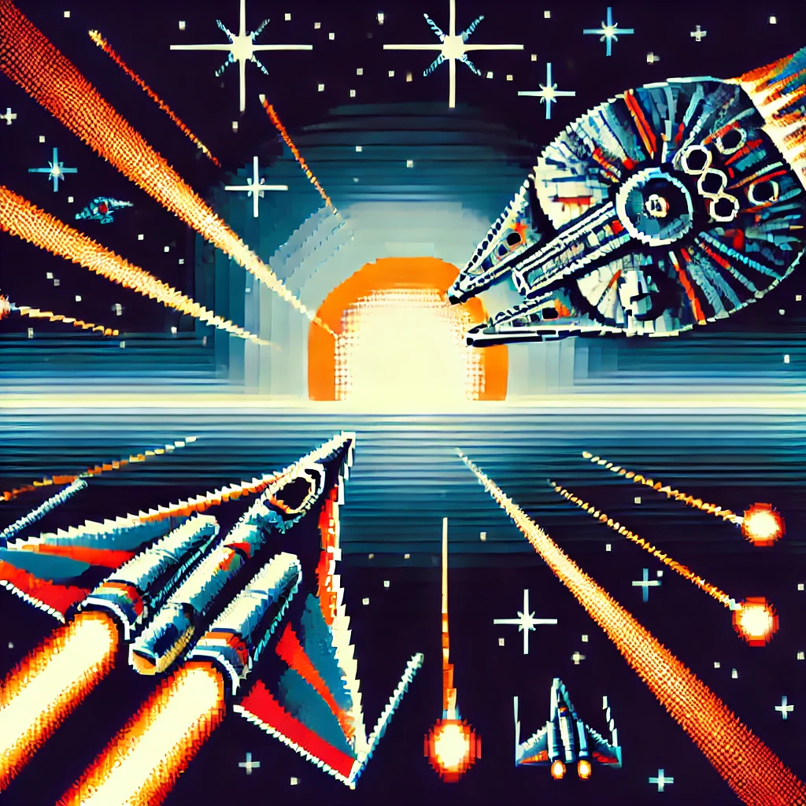

La historia de los videojuegos se remonta a mediados del siglo XX, cuando varias personas empezaron a experimentar con tecnología de computadoras y televisores para crear entretenimiento interactivo. Aunque los videojuegos tal como los conocemos hoy son el resultado de décadas de desarrollo, los primeros pasos hacia su creación ocurrieron en los años 50 y 60.
En 1952, el británico A.S. Douglas creó un juego llamado "OXO", que era una versión del tres en línea (tic-tac-toe) en la computadora. Este fue uno de los primeros ejemplos de interacción con una computadora para entretenimiento.
En 1962, Steve Russell en el MIT (Massachusetts Institute of Technology) creó el primer videojuego de acción llamado "Spacewar!". Este juego permitió a dos jugadores controlar naves espaciales que intentaban destruirse mutuamente, y fue uno de los primeros en ser jugado en una computadora.
En 1972, el creador Ralph H. Baer desarrolló un sistema llamado "Brown Box", que más tarde se convertiría en la Magnavox Odyssey, la primera consola de videojuegos doméstica comercializada.En 1972, también fue lanzado "Pong" de Atari, el primer gran éxito comercial en los videojuegos, que llevó a los videojuegos a las salas de arcade.